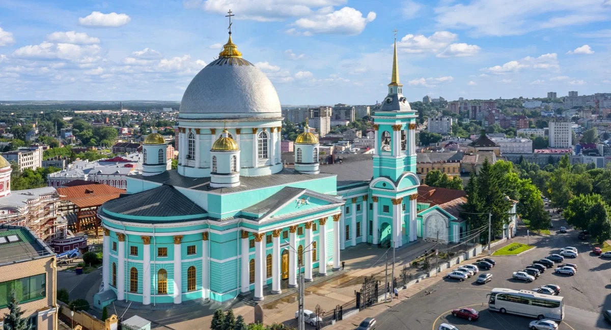

На Красной площади — именно так называется главная площадь города — расположился Знаменский кафедральный собор. Находится он на территории мужского монастыря в историческом центре Курска.
Собор построили в 1826 году в честь победы в Отечественной войне 1812 года. С тех пор храм не раз реставрировали, после пожара Второй мировой восстанавливали едва ли не с нуля. А с 1930-х по 1990-е годы в здании собора находился кинотеатр «Октябрь»
Сейчас это действующий православный храм. Вход в собор бесплатный. Часы работы: с 07:30 до 19:00 каждый день.

Снаружи собор напоминает усадьбу или даже дворец. Оригинальные росписи, фрески и другие элементы декора внутри собора были утрачены, но реставраторы восстановили по фотографиям некоторые детали
Римско-католическая церковь во имя Успения Пресвятой Девы Марии
Построенная в конце XIX века, церковь представляет собой образец неоготической архитектуры с характерными острыми шпилями и узкими, как в готических замках, окошками.
Этот храм после революции был закрыт, со временем — частично разрушен. В 1970-е годы здесь располагался Дом культуры, а современная церковь начала действовать только в 1990-е.
Внутреннее убранство католической церкви — в отличие от православных — довольно скромное. Зато окна традиционно украшены разноцветными витражными стёклами.
В храме есть орган — иногда здесь устраивают органные концерты, посетить которые может любой желающий.
Часы работы: понедельник, вторник, среда — выходные
четверг и пятница — с 16:30 до 19:00
суббота — с 08:30 до 11:00
воскресенье — с 09:30 до 15:30